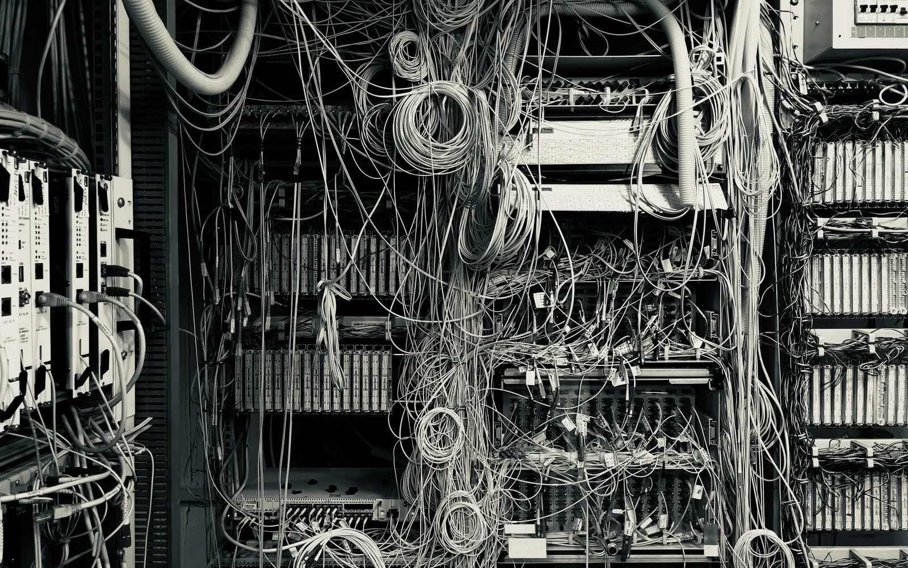
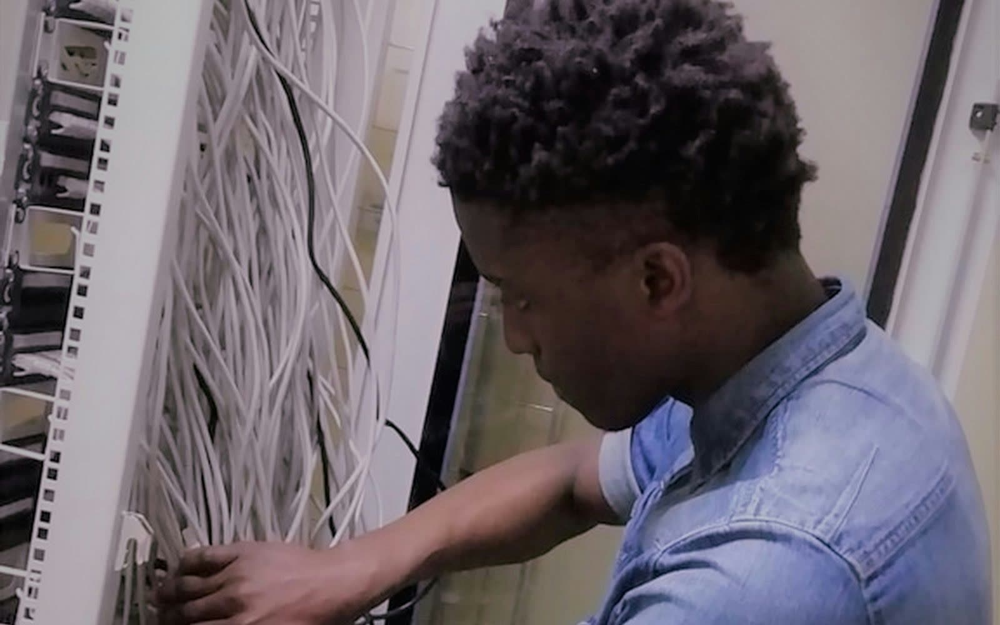
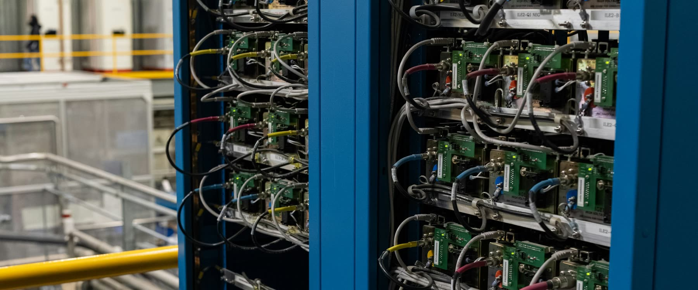

Inherited environments are rarely clean.
Mergers, acquisitions, consolidations, and migrations often begin with one major problem: nobody fully trusts the infrastructure documentation. The acquired site may have old spreadsheets, partial rack diagrams, missing CMDB records, unclear device ownership, and network details that no longer match the physical floor.
If the team does not know what exists, they cannot confidently decide what to keep, replace, move, retire, secure, or integrate. Without clear rack-level visibility, the integration plan becomes guesswork.

Rapidly characterize inherited infrastructure.
Using rack scans, RackTrack identifies visible devices, rack positions, labels, ports, cables, patch panels, PDUs, switches, servers, firewalls, routers, storage units, and other physical components.
Instead of waiting months to manually assemble inventory and topology, RackTrack helps teams build a defensible plan in days. Instead of asking, “Can we trust the seller's spreadsheet?”, teams can ask, “What does the floor actually show?”

A clearer inherited data center footprint.
A company acquires a regional business with multiple data center rooms and inherited network environments. Seller spreadsheets, rack diagrams, and CMDB exports may not match the floor.
With RackTrack, site teams scan rows using mobile devices. Within days, the migration team has a clearer picture of what exists, what is missing from documentation, and where the highest risks are.

When the plan is built on ground truth, the migration becomes faster, cleaner, and easier to defend.
From unknown footprint to plan.
- CaptureSite teams walk rows and scan racks using a mobile device.
- DetectComponents, rack positions, labels, cables, ports, and device types are identified.
- CompareScanned data is compared with seller spreadsheets, CMDB exports, and DCIM records.
- Surface riskMissing records, unknown assets, and unclear topology are highlighted.
- PlanVerified inventory supports a phased, defensible integration plan.
Migration success depends on knowing what you inherited
RackTrack helps M&A and migration teams turn unknown infrastructure into verified inventory, topology context, and practical migration intelligence. When the plan is built on ground truth, the migration becomes faster, cleaner, and easier to defend.